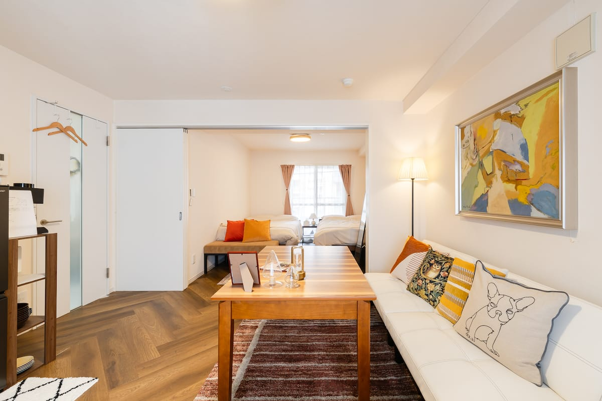
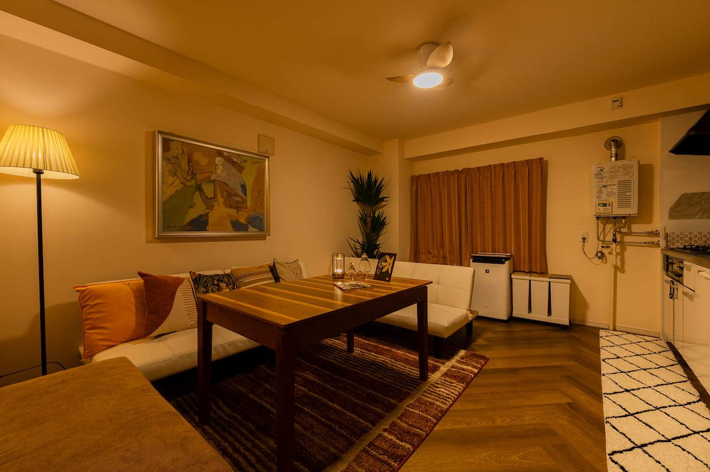
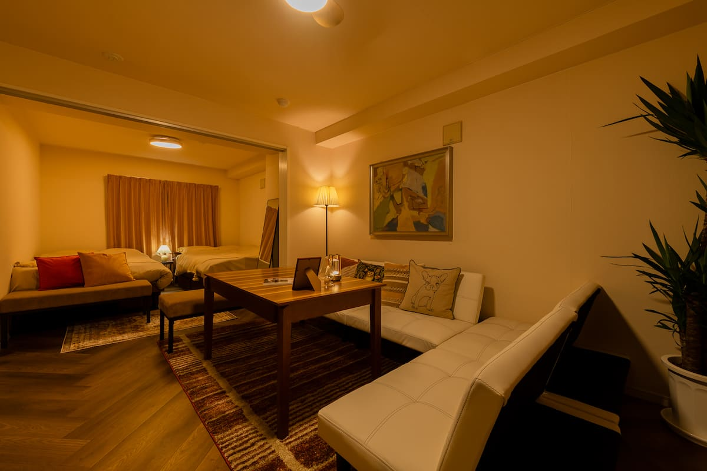
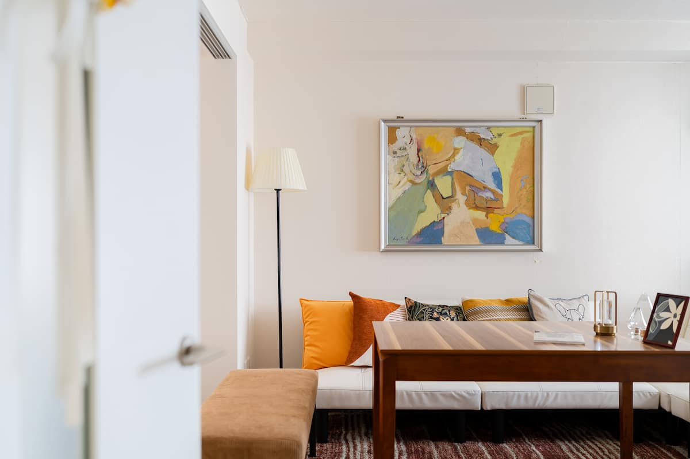
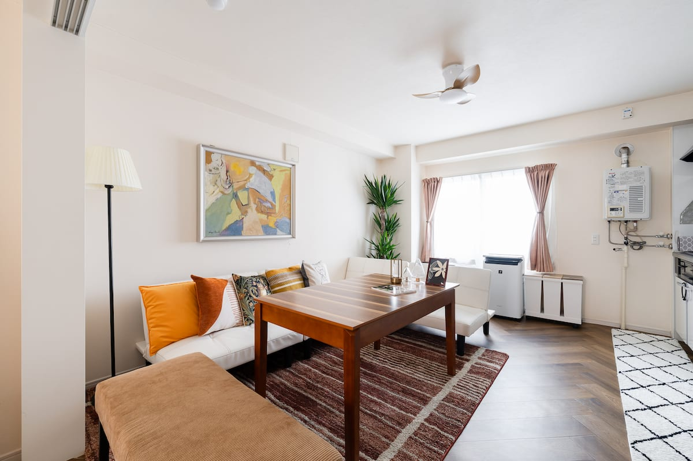

札幌中心部
大通、公園、飲食店、買い物など、街歩きの拠点として案内します。

About
札幌観光、家族旅行、ワーケーション、長期滞在まで、街中での移動しやすさと部屋で過ごす時間の快適さを伝える構成にします。定員、寝具、料金、キャンセル条件はBeds24側の最新情報と合わせます。
Beds24
このエリアはBeds24公式プラグイン、埋め込みコード、または外部予約ページへのボタンに差し替えます。
日付、人数、泊数を選んで空室確認に進む想定です。予約、料金計算、決済機能は自作しません。
Gallery
実写真に差し替える前提で、街中の滞在でも室内の快適さが伝わる順に配置します。





Amenities
最終公開前にBeds24、OTA掲載情報、現地備品と照合します。
Access
Sightseeing
大通、公園、飲食店、買い物など、街歩きの拠点として案内します。
小樽、定山渓、札幌近郊の観光へ移動しやすい情報を整理します。
雪まつり、冬の移動、服装など、季節の不安を減らす案内を追加します。
FAQ
予約確定後の案内に合わせて掲載します。建物入口や鍵の受け取りが分かるように整理します。
Beds24の在庫、料金設定、滞在条件と合わせて案内します。設備情報も長期滞在目線で整理します。
Beds24またはOTA側の最新条件と整合させます。予約画面で最終確認できる導線にします。